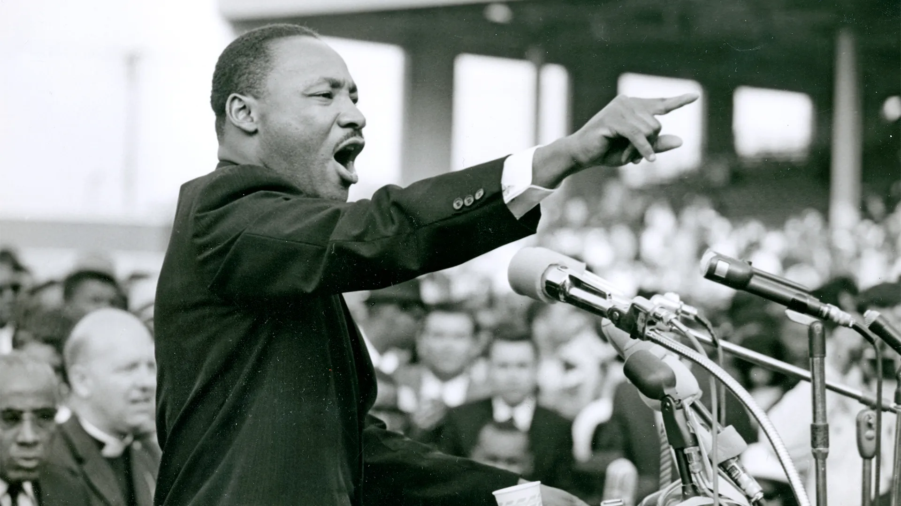

A Tribute to Martin Luther King

In the world of civil rights in The United States of America, there is
only one name that stands out above all others: Dr. Martin Luther King Jr.
His determination was unparalleled and his bravery unmatched, which is why
he’s become an iconic figure in United States history. He spent his life
fighting for equality between races, a goal that we are still working
towards to this day.
about
- Martin Luther King Jr. was an African American Baptist minister
-
Dr. Martin Luther King Jr. was born January 15th, 1929, in Atlanta,
Georgia
- assassinated in 1968
some of his acomplishments

-
visible spokesperson and leader in the American civil rights movement
from 1955 until 1968
- Established The March on Washington for Jobs and Freedom
- He won the Nobel Peace Prize
- helped to found the Montgomery Improvement Association
learn more